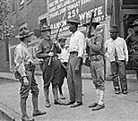
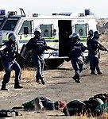
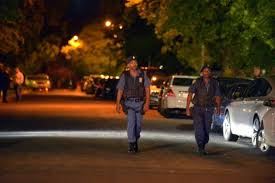

Although police were expected to protect everybody at all times, Police in Born A Crime, during the apartheid era chose to serve only a selected race.
Apartheid -was a system of institutionalized racial segregation that existed in South Africa from 1940s up to around early 1990s.Apartheid was characterized by an authoritarian political culture based on white supremacy which encouraged state repression of Black African, Colored, and Asian South Africans for the benefit of the nation's minority white population.
Apartheid was delineated into petty apartheid, which entailed the segregation of public facilities and social events and grand apartheid, which dictated housing and employment opportunities by race. Prior to the 1940s, some aspects of apartheid had already emerged in the form of minority rule by White South Africans and the socially enforced separation of Black South Africans from other races, which later extended to pass laws and land apportionment. Apartheid was adopted as a formal policy by the South African government.

It was the police’s duty to ensure that black people were segregated from white people, colored people and Asians. The police as dictated by the law took into custody any perpetrators of laws passed by the government. “…and if an interracial couple got caught, God help them. The police would kick down the door, drag the people out, beat them and arrest them… “p22, Born A Crime

The police charged with the responsibility of maintaining law and order were causing more harm than good, i.e. Police brutality was one of several forms of police misconduct which involved undue violence and use of extensive force on civilians by police.“…In Soweto police were an occupying army …the township was in constant state of insurrection; someone was always marching or protesting somewhere and had to be suppressed. Playing in my grandmother’s house, I’d hear gunshots, screams, tear gas being fired into crowds…”p29 Born A Crime
PATROL

Officers were charged with ensuring the safety and well-being of specified areas, within a neighborhood after a specified time. “…there were a whole were a whole police squad whose only job was to go around peeking through the window…”p22, Born A Crime
“…after a certain hour, blacks had to be back home in the township or risk arrest…”p24, Born a Crime
ROLE OF POLICE IN KENYA
LAW AND ORDER
Motto : "Utumishi kwa wote"
Kenya police are tasked with the duty of ensuring there is peace and protection for all regardless of their ethnicity,location, social status, and color.
Whenever the is unrest they conduct patrols after curfews and arrest people without their National ID's.see==> Duties of Administrative Police